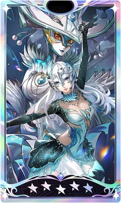

MONT·Frostgale Frostgale Kotone
Fonte: https://lufel.net/en/character/mont-frostgale/ · letto il 2026-11-14 con il browser integrato (spoiler attivi) · Stato Global: rilasciata. Convenzione: nomi di skill, awareness, armi, Persona, set e stat lasciati in inglese come su lufel.net; condizioni ed effetti tradotti in italiano. Valori skill = LV10 / LV10+Minds 5 / LV13 / LV13+Minds 5. Valori armi = refinement R0/R1/R2/R3/R4/R5/R6.
Scheda#
| Campo | Valore |
|---|---|
| Nome | Frostgale Kotone (Montagne Kotone, versione alternativa 5★; nella review lufel "Montagne") |
| Codename | MONT·Frostgale |
| Persona | Terpsichore |
| Rarità / tipo | 5★ · Limited |
| Elemento | Wind/Ice (doppio attributo: modalità Spring = Wind, Winter = Ice) |
| Posizione | Assassin |
| Ruolo (lufel) | non indicato |
| Tag (lufel) | Form Change · Resonance · Windswept · Freeze · Pierce Rate |
| Resistenza / Debolezza | Res: Wind · Wk: Psy |
| Mindscape Core | sì (KR V4.7) |
Character Review (lufel)#
- Idol Phantom Thief a doppio attributo e DPS single-target Wind/Ice. Pur avendo due attributi, in pratica solo il Wind trova un uso reale.
- La Skill 3 crea un campo; la meccanica centrale è accumulare stack tramite gli attacchi degli alleati dello stesso attributo, poi detonare quegli stack nel turno successivo insieme al proprio attacco per un danno pesante.
- Il numero di colpi degli attacchi alleati dello stesso attributo non conta: anche se un alleato infligge cinque istanze di danno con un singolo attacco Wind, costruisce comunque 1 solo stack.
- La scelta delle Revelation varia in base alla situazione. Il set Medi.+Opul. si sceglie quando si ha l'effetto di riduzione DEF ad Awareness 2 o superiore, o quando si ha già molto Pierce; è una buona opzione anche quando il party include un personaggio con forte riduzione DEF (es. HOWLER), che rende quasi inutile l'effetto Pierce del set Free.+Triu.
- Poiché Wonder può infliggere continuamente danno Wind riducendo la DEF, usa un calcolatore di DEF per determinare il setup migliore per la situazione specifica.
Pro - Alto potenziale grazie al doppio attributo.
Contro - La composizione di attributi degli alleati è forzata.
Recommended Setup (lufel)#
Nota lufel: le impostazioni consigliate sono basate su contenuti futuri; alcune funzioni potrebbero non essere ancora disponibili (Revelation, Mindscape, ecc.).
- Revelation — Space: Freedom (tooltip "Freedom - Triumph": dopo aver usato una skill, ottiene 1 stack di Glory; all'attivazione di una Resonance spende tutti gli stack di Glory e aumenta il Pierce Rate dell'8% per stack; fino a 2 stack) · oppure Meditation (tooltip "Meditation - Opulence": aumenta il CRIT DMG dei Follow Up del 50%) · oppure Ego (tooltip "Ego - Failure": aumenta la Follow Up DMG Amplification del 16%) · Sun/Moon/Star/Sky: Triumph (2-Set: Crit Rate +7.5% · 4-Set: danno degli attacchi Resonance +40%) · oppure Opulence (2-Set: danno Ice +10% · 4-Set: danno degli attacchi Resonance +40%) · oppure Failure (2-Set: Wind DMG +10% · 4-Set: ogni colpo aumenta il Follow Up DMG dell'utente del 15% per 2 turni, cumulabile fino a 3 volte — set non ancora uscito su Global)
- Main Options — Sun: HP · Moon: Attack / Damage Mult · Star: Crit Mult / Crit Rate · Sky: Attack
- Sub Options — 1ª priorità: Crit Rate / Crit Mult · 2ª: Attack / Damage Mult / Pierce Rate · 3ª: "-"
- Recommended Stats — non indicate da lufel ("-"); Battle Entry +: "-"
- Priorità skill — 1º Skill 3 · 2º Skill 1 · 3º Highlight (MAX) · 4º Skill 2 (livello 8)
- Mindscape (LV 5) — Rank Strengthening 1: Attack 20% · Rank Strengthening 2: Crit Rate 12% · Skill Enforce 1: Skill1 / HIGHLIGHT · Skill Enforce 2: Skill2 / Skill3
- Skill Rotation — A0: 3 › 1 › 3 › 1 › 3 › 1 · A6: 3 › 1 › 1 › 3 › 1 › 1
- Notes (lufel) — nessuna nota.
Skills (LV10 / LV10+Minds 5 / LV13 / LV13+Minds 5)#
La pagina lufel mostra le skill con due schede: 🌸 Spring (Wind) e ❄️ Winter (Ice).
Skill 1 — Éclat de Vent / Iceburst (SP 24) Spring: infligge danno Wind a 1 nemico pari al 73.8%/81.3%/78.3%/85.9% dell'Attack (3 colpi), con 30% di probabilità di applicare Windswept. Se Spring's Edge è attivo, ottiene anche 1 stack di Spring's Vestige e applica Spiral Sequence per 2 turni; quando Frostgale Kotone attacca un nemico con Spiral Sequence, danno critico +29.3%/29.3%/31.1%/31.1%. Winter: infligge danno Ice a 1 nemico pari al 152.7%/168.4%/162.1%/177.8% dell'Attack, con 97.6%/97.6%/103.6%/103.6% di probabilità di applicare Freeze. Se il bersaglio è già Frozen, applica On Ice per 2 turni; i nemici con On Ice subiscono +13.7%/13.7%/14.5%/14.5% di danno Ice.
Skill 2 — Zephyr / Sapphire Storm (SP 24) Spring: infligge danno Wind a tutti i nemici pari al 31.3%/34.5%/33.3%/36.5% dell'Attack (3 colpi). Se Spring's Edge è attivo, ottiene anche 2 stack di Spring's Vestige. Winter: infligge danno Ice a tutti i nemici pari all'83.8%/92.4%/89.0%/97.6% dell'Attack, con 48.8%/48.8%/51.8%/51.8% di probabilità di applicare Freeze. Se Winter's Edge è attivo, danno di questa skill +20%.
Skill 3 — Ailes au Vent / Frozen Wings (SP 28) Spring: attiva Spring's Edge per 1 turno e infligge danno Wind a 1 nemico pari al 92.8%/102.3%/98.5%/108.0% dell'Attack (3 colpi). Mentre Spring's Edge è attivo, quando gli alleati infliggono danno Wind con skill, Highlight, Theurgy o Resonance, infligge danno Wind al bersaglio selezionato pari al 20% dell'Attack di Frostgale Kotone e ottiene 1 stack di Spring's Vestige. Al termine di Spring's Edge, spende tutti gli stack di Spring's Vestige e infligge al bersaglio selezionato in quel turno danno Wind pari a (numero di stack di Spring's Vestige + 4) × 36.4%/40.1%/38.6%/42.3% dell'Attack; questo danno conta come Resonance. Winter: attiva Winter's Edge per 1 turno e infligge danno Ice a 1 nemico pari al 229.0%/252.5%/243.1%/266.5% dell'Attack. Mentre Winter's Edge è attivo, quando un alleato subisce un attacco, concede Glacial Heart a tutti gli alleati per 2 turni, proteggendoli da un massimo di 1301/1301/1380/1380 danni (attivabile fino a 2 volte). Inoltre, quando gli alleati infliggono danno Ice con skill, Highlight, Theurgy o Resonance, ottiene 1 stack di Winter's Vestige. Al termine di Winter's Edge, spende tutti gli stack di Winter's Vestige e infligge al bersaglio selezionato in quel turno danno Ice pari a (numero di stack di Winter's Vestige + 4) × 27.9%/30.8%/29.6%/32.5% dell'Attack; questo danno conta come Resonance.
HIGHLIGHT (cooldown 4 turni) Spring: infligge danno Wind a 1 nemico pari al 212.5%/234.2%/225.5%/247.3% dell'Attack (3 colpi). Se Spring's Edge è attivo, ottiene 1 stack in più di Spring's Vestige (può superare il limite). Se Spring's Edge non è attivo, infligge 1 colpo in più di danno Wind al bersaglio selezionato. Winter: infligge danno Ice a 1 nemico pari al 380.6%/419.6%/404.0%/443.0% dell'Attack, con 68.3%/68.3%/72.5%/72.5% di probabilità di applicare Icebound. Se Winter's Edge è attivo, la probabilità di Icebound aumenta del 29.3%/29.3%/31.1%/31.1%. Se Winter's Edge non è attivo, danno dell'Highlight +20%.
Passiva — Performance Scoring: all'inizio della battaglia, se nel party c'è un alleato Wind, danno Wind di Frostgale Kotone +33.0%; se c'è un alleato Ice, danno Ice +33.0%.
Passiva — Technical Scoring: in modalità Spring, ogni volta che un alleato attacca con attributo Wind, Attack del party +8.1% per 2 turni (fino a 5 stack). In modalità Winter, ogni volta che Frostgale Kotone ottiene uno scudo, Defense del party +9.0% per 2 turni (fino a 4 stack).
Awareness#
- A0 — Swan on the Ice (talento base): Frostgale Kotone ha 2 modalità, Spring e Winter; in battaglia può cambiare liberamente modalità mentre Spring's Edge / Winter's Edge non è attivo, cambiando gli attributi di skill e Highlight. All'inizio della battaglia è in modalità Spring, ma se nel party ci sono più alleati Ice che Wind sarà in modalità Winter. Per ogni stack di Spring's Vestige o Winter's Vestige ottenuto, Attack +5% permanente (fino a 7 stack).
- A1 — Etched in Ice: Spring: ogni attivazione di Spring's Edge concede 1 stack di Spring's Vestige; al termine di Spring's Edge, danno Resonance +8% per ogni stack di Spring's Vestige (fino al 40%). Winter: idem con Winter's Edge / Winter's Vestige.
- A2 — Swan's Gaze: Spring: mentre Spring's Edge è attivo, Defense di tutti i nemici −40% e costi in SP delle skill del party −25%. Winter: mentre Winter's Edge è attivo, danno Ice del party +30% e costi in SP delle skill −25%.
- A3 — Triple Axel: aumenta di 3 i livelli di skill di Zephyr / Sapphire Storm e Ailes au Vent / Frozen Wings.
- A4 — Queen of Ice and Wind: Spring: attivando un Highlight, se Spring's Edge è attivo ottiene 1 stack in più di Spring's Vestige (può superare il limite); se non è attivo, danno dell'Highlight +35%. Winter: idem con Winter's Edge / Winter's Vestige.
- A5 — Seasonal Highlight: aumenta di 3 i livelli di skill di Éclat de Vent / Iceburst e Thief Tactics.
- A6 — Dance of Love: Spring: dopo aver attivato la Resonance al termine di Spring's Edge, estende Spring's Edge di 1 turno; riottiene fino a 2 stack spesi di Spring's Vestige e fino a 2 stack che superavano il limite; poi la Resonance può attivarsi di nuovo (la durata non può essere estesa ancora). Inoltre Pierce Rate della Resonance +4% per ogni stack di Spring's Vestige (fino al 20%). Winter: idem con Winter's Edge / Winter's Vestige.
Stats#
- Base (LV1): HP 309 · ATK 102 · DEF 50 · Speed 98
- Hidden Ability LV7: CRIT DMG 184.9%
- LV80 (HP / ATK / DEF): A0 3480 / 1150 / 567 · A1 3542 / 1171 / 577 · A2 3606 / 1192 / 587 · A3 3668 / 1212 / 597 · A4 3730 / 1233 / 607 · A5 3794 / 1253 / 618 · A6 3856 / 1274 / 628
- LV100 (HP / ATK / DEF): A0 4305 / 1423 / 701 · A1 4383 / 1449 / 714 · A2 4462 / 1475 / 727 · A3 4540 / 1501 / 739 · A4 4618 / 1527 / 752 · A5 4697 / 1552 / 765 · A6 4775 / 1578 / 778
Armi esclusive (valori R0/R1/R2/R3/R4/R5/R6)#
5★ Lame de l'Amour — HP 2299 · ATK 760 · DEF 374 - Aumenta l'Attack del 30.0%/30.0%/39.0%/39.0%/48.0%/48.0%/57.0%. - Ogni volta che Frostgale Kotone ottiene uno stack di Spring's Vestige o Winter's Vestige, Crit Rate +5.4%/7.0%/7.0%/8.6%/8.6%/10.2%/10.2% per 2 turni; cumulabile fino a 3 volte. - Attivando Spring's Edge o Winter's Edge, danno Wind o Ice +27.0%/35.0%/35.0%/43.0%/43.0%/51.0%/51.0% per 2 turni.
4★ Lame de l'Aube — HP 1839 · ATK 608 · DEF 299 - Aumenta l'Attack del 12.0%/12.0%/16.0%/16.0%/20.0%/20.0%/24.0%. - Ogni volta che Frostgale Kotone ottiene uno stack di Spring's Vestige o Winter's Vestige, aumenta permanentemente l'Attack dell'1.8%/2.3%/2.3%/2.8%/2.8%/3.3%/3.3%; cumulabile fino a 10 volte.
Attribute Mindscape (lufel: introdotto in KR V5.2, forse non ancora su Global; la pagina ha schede Wind / Ice)#
- Mindscape Synergy — Pierce Rate Increase (consigliata): aumenta il Pierce Rate del 3.8%/7.5%.
- Mindscape Combat Skill — Gale Pierce (consigliata): per ogni 8% di Pierce Rate posseduto, l'amplificazione totale del danno aumenta dello 0.5%/1.0%, fino al 2.5%/5.0%.
Mindscape Core (lufel: introdotto in KR V4.7; sbloccandolo si può raggiungere il LV100)#
- Mindscape Amplification (×100): Final Damage +2% a tutti gli alleati Wind · Final Damage +2% a tutti gli alleati Ice.
- Mindscape Amplification (×100): Wind Attribute Damage Mult +8% e Wind DMG Taken −10% a tutti gli alleati Wind · Ice Attribute Damage Mult +8% e Ice DMG Taken −10% a tutti gli alleati Ice.
- Clarity (×24): dopo Ailes au Vent / Frozen Wings, ottiene subito 2 stack di Spring's Vestige / Winter's Vestige. Dopo che un altro alleato Wind/Ice usa una skill Persona/HIGHLIGHT/Theurgy, ottiene 2 stack di Spring's Vestige / Winter's Vestige che possono superare il limite (fino a 6 stack in questo modo). Mentre Spring's Edge / Winter's Edge è attivo, Pierce +5.0%/7.5%/10.0%.
- Purity (×24): consumando stack di Spring's Vestige / Winter's Vestige, aumenta lo Skill Damage del follow-up dell'1.2%/1.9%/2.5% + livello di Awareness × 6% per ogni stack consumato (tetto 12.5%/18.8%/25.0% + livello di Awareness × 60%). Riduce del 15% il proprio costo in SP.
Recommended Combination (lufel)#
Nota lufel: alcune Persona e armi consigliate potrebbero non essere ancora uscite nella tua regione. - Wonder Weapons: Arc Knife · Ex Machina · Ice Age - Persona (ATK): Koumokuten · Jikokuten · Narcissus · Dominion - Persona (CRITICAL): Dionysus - Persona (REDUCE DEF): Vishnu · Norn · Janosik
Recommended Parties (lufel)#
Nota lufel: la maggior parte degli esempi di party è stata scritta attorno all'uscita KR/CN del personaggio; Thieves o Mindscape Core successivi potrebbero non essere considerati. Solo riferimento. - Lineup — CHORD: ottiene stack che superano il limite di quantità tramite l'HL. · HOWLER: potenzia la Resonance concessa dalla Skill 3 di Montagne riducendo la DEF nemica. · WIND·Tempest: infligge danno Wind con la Skill 1, e le skill multi-colpo di Montagne rendono facile attivare la passiva di Riko. - Party d'esempio — MONT·Frostgale / LEON / CHORD / ORACLE · MONT·Frostgale / CHERISH / FOX / PHOEBE · MONT·Frostgale / J&C / CHORD / ORACLE · MONT·Frostgale / WIND·Tempest / HOWLER / ORACLE · MONT·Frostgale / HOWLER / CHORD / ORACLE
Nomenclatura#
- lufel: "Frostgale Kotone" (codename MONT·Frostgale; nella review "Montagne"), slug URL
mont-frostgale. Stati/risorse: Spring's Edge / Winter's Edge, Spring's Vestige / Winter's Vestige, Spiral Sequence, On Ice, Glacial Heart, Icebound, Glory (Revelation). Nomi skill in francese come su lufel (Éclat de Vent, Zephyr, Ailes au Vent) con le varianti Winter (Iceburst, Sapphire Storm, Frozen Wings). - Nelle descrizioni lufel "critical rate" = Crit Rate, "critical damage" = Crit Mult, "Follow Up" = Resonance.